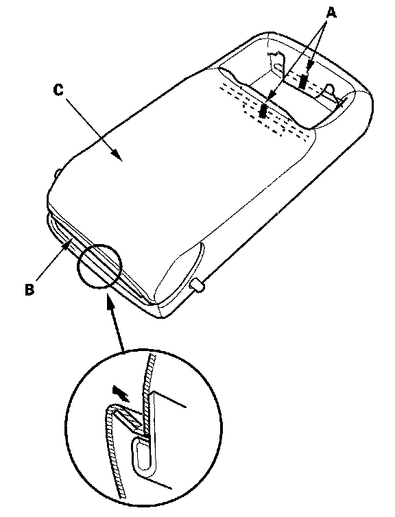
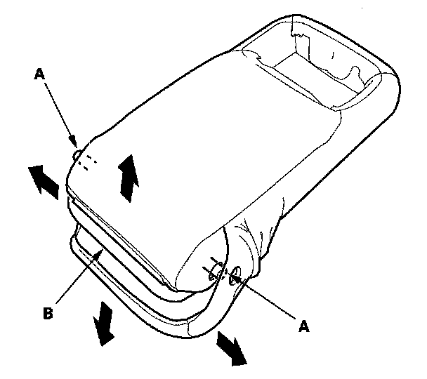

Rear Seat Armrest Cover Replacement
Rear Seat Armrest Cover ReplacementFor Some Models - 4-door
NOTE: Take care not to tear the seams or damage the seat covers.
1. Remove the armrest from the seat-back.
2. Remove the armrest beverage holder from the armrest.

3. Release the clips (A) and hook strip (B), and pull back the armrest cover (C) all the way around.

4. Release the armrest cover from the armrest pivot portions (A), then remove it from the pad (B).
5. Install the cover in the reverse order of removal. To prevent wrinkles when installing an armrest cover, make sure the material is stretched evenly over the pad before securing the hooks and hook strips.